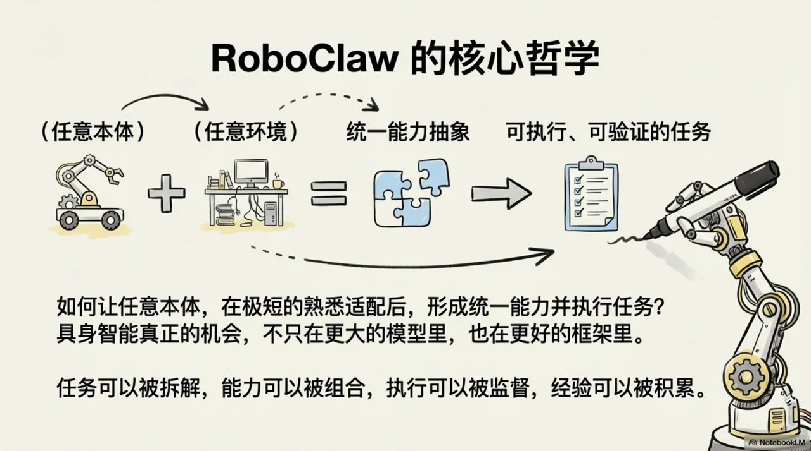
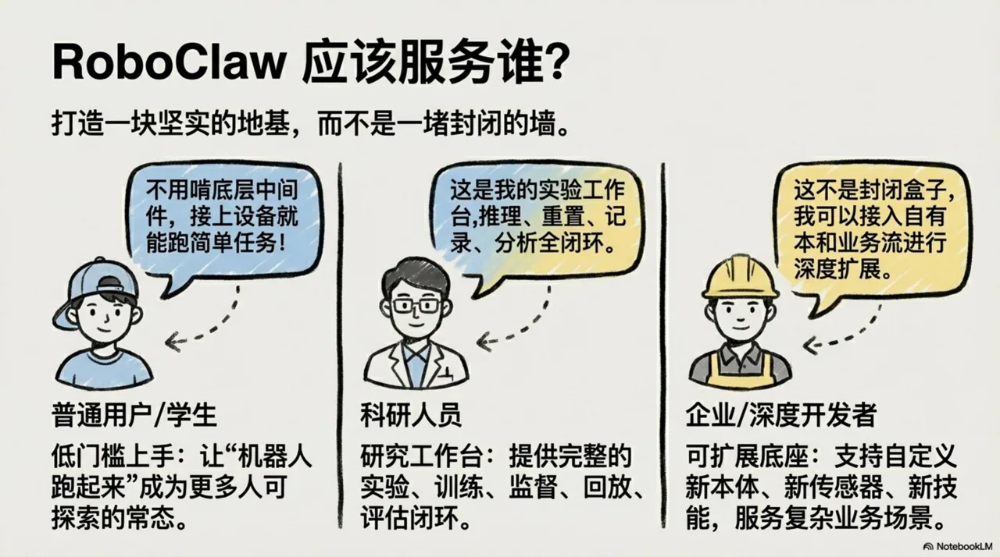

RoboClaw：我们想做的，不只是一个机器人 Demo，而是具身智能时代的AI助手

这两年，具身智能很热。真机、VLA、世界模型、仿真训练都在快速推进。
但真到落地时，一个问题始终没有被很好解决：
当本体变了、传感器变了、环境变了、任务变了，系统还能不能低成本接着用？
我们做 RoboClaw，就是想回答这个问题。
RoboClaw 不是给某一台机器人包一层 Agent 外壳，也不是把 OpenClaw 直接接上机器人接口。
它要做的是一个面向任意本体、任意环境、任意任务的具身智能AI助手。
OpenClaw 给了我们一个很重要的起点：控制平面、节点接入、会话管理、工具编排这套思路是成立的。
但机器人系统比数字世界的助手更复杂。它有本体、有传感器、有运动学、有空间约束、有安全边界，也会在真实世界里出错。
所以在 RoboClaw 里，OpenClaw 更像是 Control Plane，而不是整个系统本身。

我们现在认同的架构
1. Control Plane：负责用户、会话、Agent 编排、工具路由和远程接入。
2. Embodiment Plane：负责 body schema、sensor schema、capability graph、运动学和语义动作。
3. Execution Plane：负责 ROS2 runtime、ros2_control、controller manager、action/service/topic adapter、安全和 supervisor。
4. Learning Plane：负责 episode、demonstration、replay、evaluation，以及未来的 few-shot 和 life-long learning。
这里我们最看重的一点，是 familiarization。
一个新本体接进来，系统不应该假装自己立刻全懂。它应该先枚举关节和传感器，做小幅试探动作，建立动作和观测的对应关系，校验 home、limits、direction，再形成当前状态下的 capability graph。
这也是我们为什么不希望把机器人差异都丢给 prompt，更不希望大模型直接输出低级 joint command。更合理的路径应该是：
goal -> task / skill plan -> supervisor -> typed execution contract -> runtime / backend adapter
也就是说，系统优先调度语义动作和技能合同，而不是把底层控制直接暴露给 LLM。
我们已经真实打通了什么
RoboClaw 现阶段不是一张好看的架构图，我们已经在仓库里跑通了一条很小但真实的链路：
Gateway -> RoboClaw typed contracts -> bounded planner -> SO101 body adapter -> PyBullet execution adapter
现在可以通过 roboclaw.so101.run 这样的 OpenClaw 风格入口，进入 RoboClaw runtime，再驱动 PyBullet 里的 SO101 执行一个受控的 wave 动作，并留下 JSON trace。
这条路径还很窄，但它是真的。我们也明确承认：动态 embodiment discovery 还没完成，ROS2 真机执行还没完成，learning plane 也还没落地。

写在最后
如果一句话概括我们想做的事情，那就是：
RoboClaw 不是 “OpenClaw for robots”。
它是 OpenClaw 风格控制平面之上，一个面向任意本体、任意环境、任意任务的具身智能AI助手。
上海交通大学 MINT 实验室联合 Evo-Tech
欢迎对具身智能、机器人系统、训练平台、技能AI助手与真实世界部署感兴趣的朋友交流与共创。